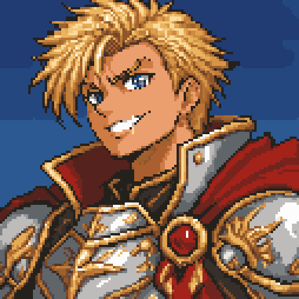
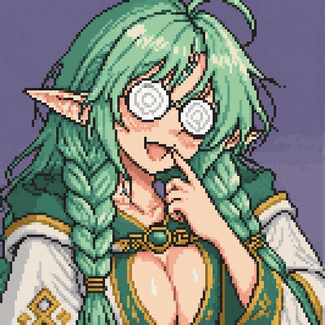
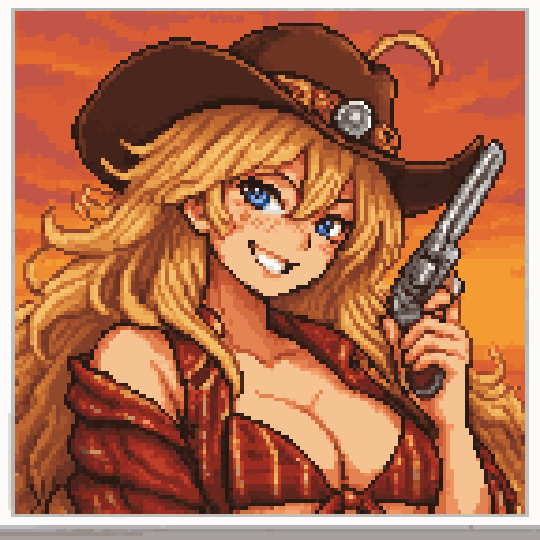
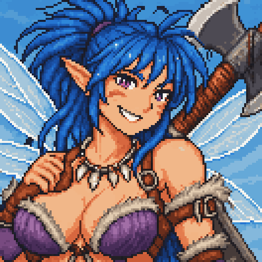
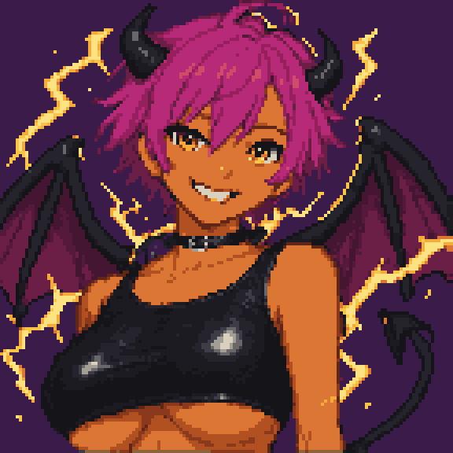

Hiro
The Hero of Xyphos
Son of a Goddess. Peaked early.
Roll the d20. Lose your pants. Save the world.
Twenty years ago, they saved the world. Hiro, son of Tori the Goddess of Fertility, led his friends into the Demon Lord's throne room and came out a legend. Then he spent twenty years celebrating.
This morning, he woke up at level 1. One night with the wrong woman drained him dry. By breakfast, two bandits had beaten him, taken his Legendary Blade, his armor, his cape and his boots, and thrown him in a ditch in his heart-print boxers. The greatest healer alive pulled him out. She's level 1 too: her magic can just about close a paper cut, so these days she swings an old wooden baseball bat.
Every action is a roll of the die. Attacks, spells, heals, escapes: everything is a d20 check, and the game tells you in plain words what the die needs to show ("NEEDS 13+") before it leaves your hand. Roll a natural 20 and the Hero's mother may drop in from the heavens to help. Roll a natural 1 and you trip over your own feet in front of everyone.
Turn order you can see, odds you can read. Everyone rolls for turn order every round, shown on a turn bar. Hover a target to see your chance to hit. Fill the Excitement gauge to unleash Limit Breaks.
A party with no shame. A cocky golden-boy Hero, an elf healer with "field notes" you should never read, a fire mage who bets on everything, a blacksmith who fears nothing but his wife, and more.
Clothes are optional (eventually). The longer a fight goes, the worse everyone looks: torn, then down to boxers and swimsuits. Nobody will let them forget it.
Features
Soft-shaded anime pixel art in the style of 90s Japanese PC games. Then the signature moves explode with sharp, modern effects that have no business in a game that looks this old.
The cast
A loud cast that roasts each other constantly but always believes in the Hero when it counts. Hiro is always in the party.

The Hero of Xyphos
Son of a Goddess. Peaked early.

The elf healer
"Researcher." Do NOT read her notes.

The fire mage
Will bet on this.

The tank
Fears nothing. Except her.

The gunslinger
Trigger-happy. Calls you "sugar".

The bard
Heartthrob. It's a problem.

The fairy barbarian
Six inches tall. Do NOT call her cute.

The succubus
Succubus. Her dad is right there.
The free demo
Twenty years ago: the four legends storm the Abyssal Citadel to face the Demon Lord.
The tavern, a very strange night, the morning after, two bandits, a ditch, Sylphina's research station, the smithy, the town on foot, Morningwood Forest, the bandit camp, and the Bandit King's tent (which has a lava pit). It ends with a night back at the tavern.
Voiced dialogue, results screens, autosave and the retro color filter, on Windows PC.
Get the free demoControls
| Arrows / WASD | Move, pick targets |
| Shift | Run in towns; fast-forward fights |
| Z E Enter | Confirm, talk, advance dialogue |
| X / Backspace | Back |
| Tab | Party menu in towns; auto-battle in fights |
| Esc | Options |
| F8 | Retro color filter |
The game autosaves every time you enter a new place. A full party wipe is game over, so save often.
Suggestive comedy for adults: innuendo, revealing outfits, clothes torn off in battle, swimsuits and underwear. All characters are adults.
Knights of Xyphos is made by a one-person studio using AI-assisted tools for art, voices and some writing, with every piece directed, edited and assembled by hand. Money the game earns goes toward hiring artists, programmers and voice actors to improve it over time.
Some effects made with pixelfx by Patch and Hugo Duprez (MIT License).